以VALIDITY为起点，仅在候选有效域内生成marker，切断非候选P连桥。实际输入、显著性阈值和道路/同日参考规则不变。灰色始终是原无效支持。
S07_jining_3678A_2021-02-23
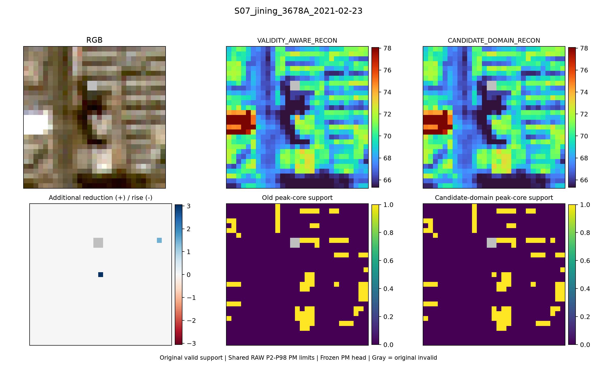
S07_jining_3678A_2021-02-23
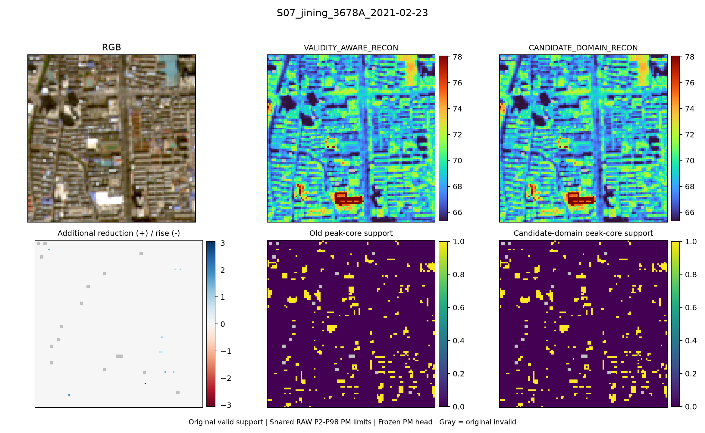
S19_dandong_1601A_2019-10-03
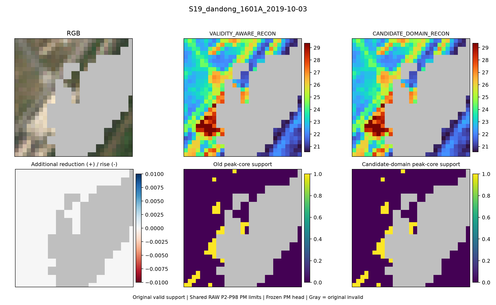
S15_yueyang_1848A_2021-06-01
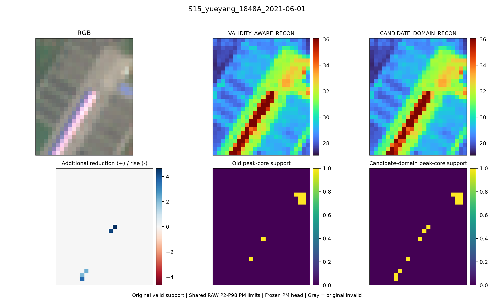
S01_beijing_1012A_2021-02-21
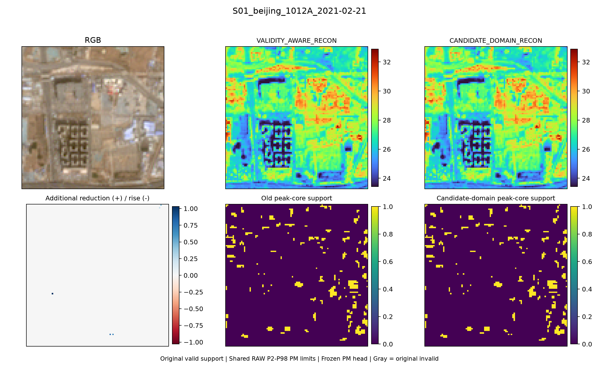
S05_jiaozuo_1829A_2021-09-29
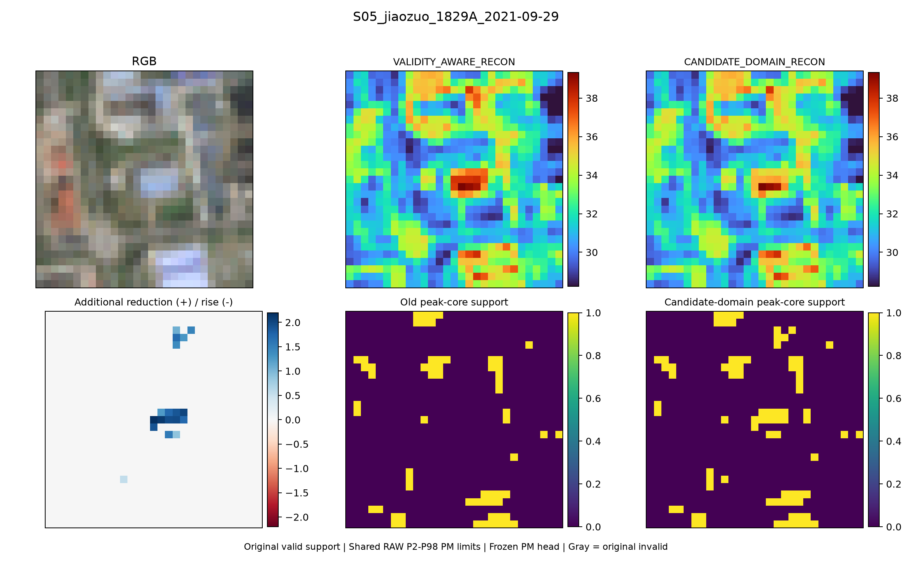
WINDOW_A_2021-12-30
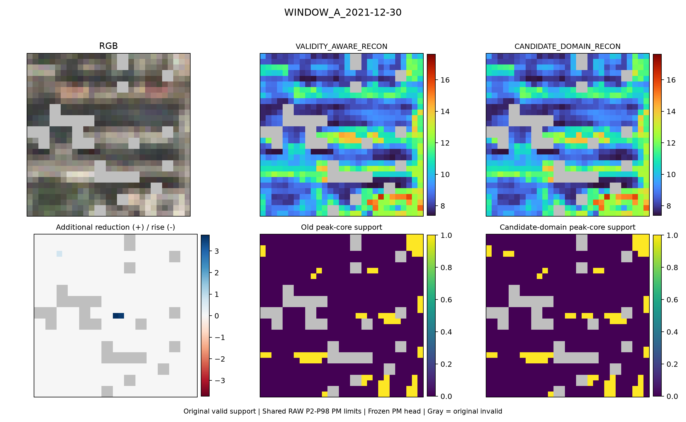
yueyang_2022-07-01
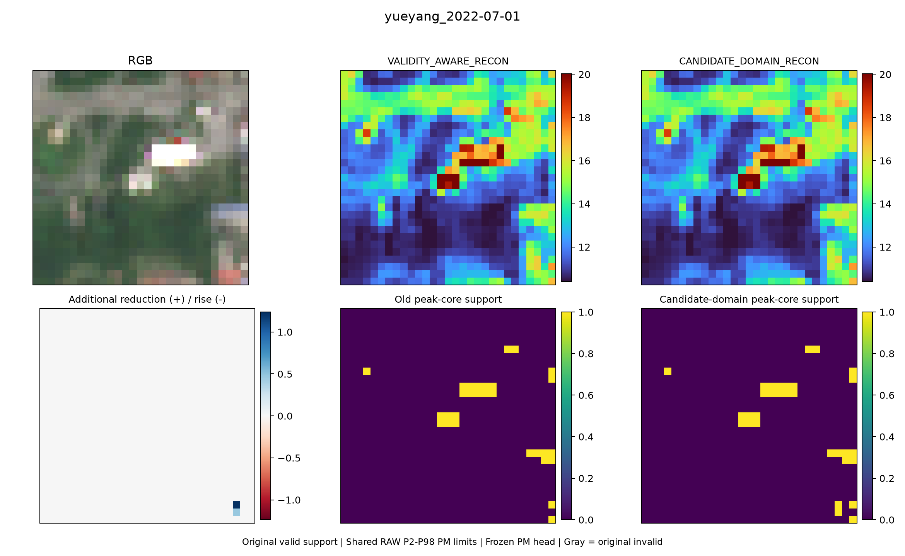
qujing_2022-03-07
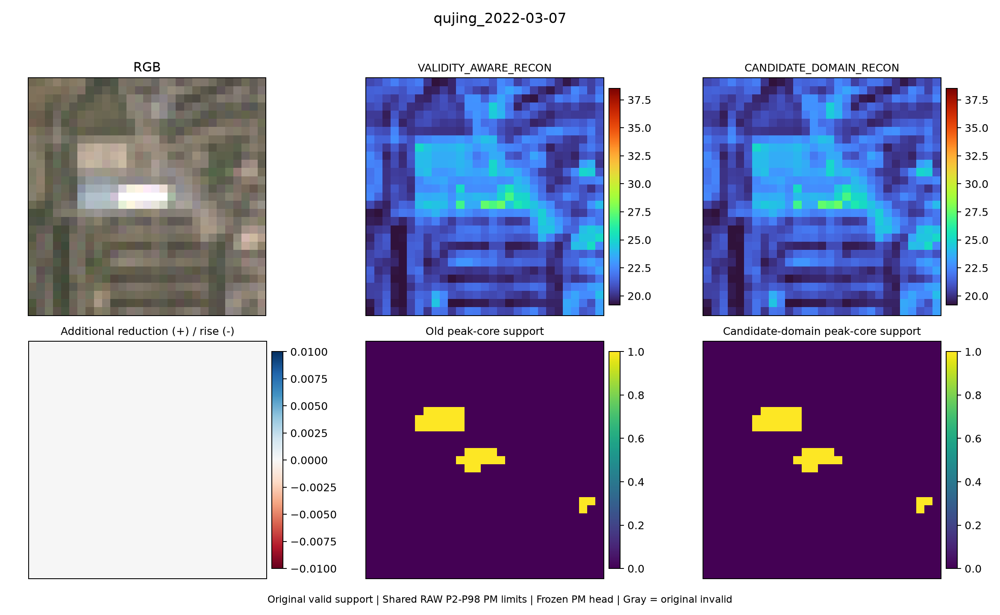
S18_beijing_1010A_2021-02-11
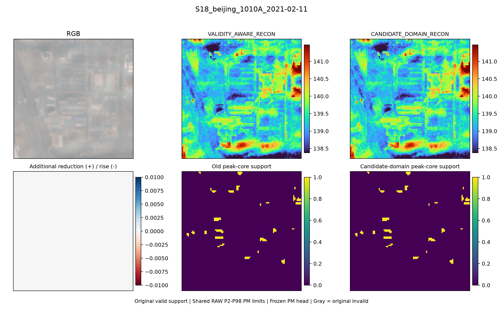
EVENT_S04_jian_2368A_2021-09-21
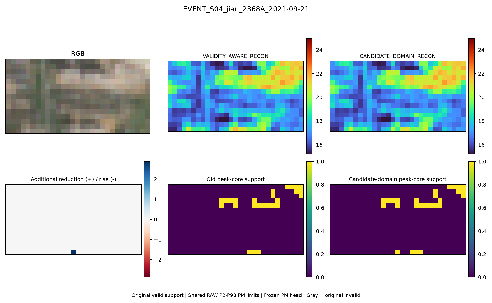